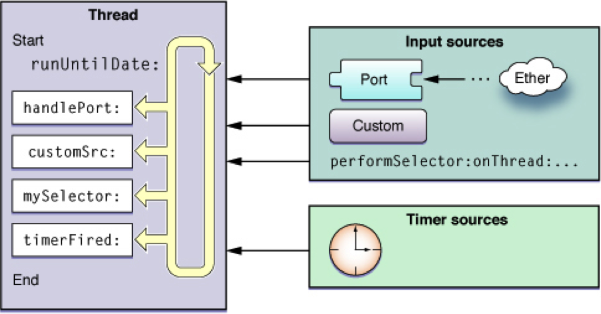
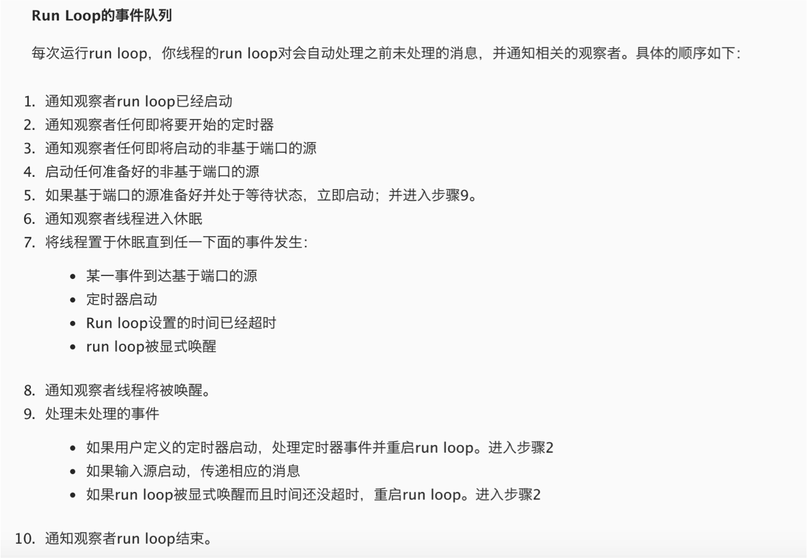
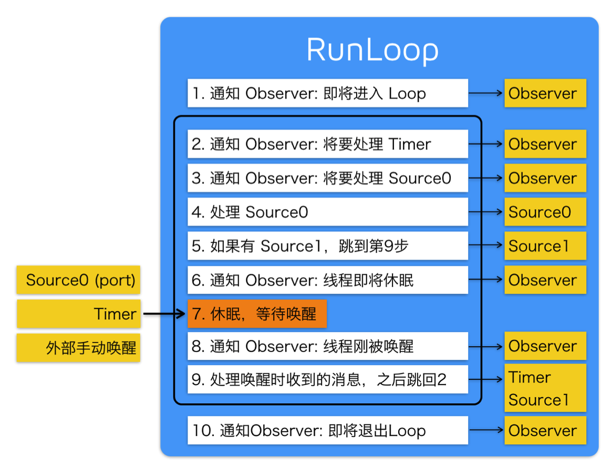

RunLoop 就这一篇
Wed 10 May 2017 by Little Captain概念
- 字面意思 : 运行循环
示意图

基本作用
- 保持程序的持续运行
- 处理App中的各种事件
- 触摸事件
- 定时器事件
- Selector事件
- …
- 节省CPU资源
- 提高程序性能, 该做事时做事，该休息时休息
- ...
如果没有 runloop
int main(int argc, char * argv[]) {
NSLog(@"execute main function"); // 程序开始
return 0; // 程序结束
}
如果有了 runloop
int main(int argc, char * argv[]) {
BOOL running = YES; // 程序开始
do {
// 执行各种任务，处理各种事件
// ......
} while (running); // 持续运行
return 0;
}
- main 函数里面启动了 RunLoop ，程序并不会马上退出，保持持续运行状态
int main(int argc, char * argv[]) {
@autoreleasepool {
return UIApplicationMain(argc, argv, nil, NSStringFromClass([AppDelegate class]));
}
}
解释
- 第3行代码的UIApplicationMain函数内部就启动了一个 runloop
- UIApplicationMain函数一直不会返回，保持了程序的持续运行
- 这个默认启动的runloop是跟主线程相关联的
RunLoop对象
iOS中有2套API来访问和使用RunLoop
- NSRunLoop
- Foundation
- NSRunLoop 是基于 CFRunLoopRef 的一层 OC 包装
- CFRunLoopRef
- Core Foundation
- 要了解RunLoop内部结构，需要多研究CFRunLoopRef层面的API
- CFRunLoopRef是开源的
- NSRunLoop和CFRunLoopRef都代表着RunLoop对象, 可以相互转换
获得RunLoop对象
- Foundation
- currentRunLoop, 获得当前线程的RunLoop对象
- mainRunLoop, 获得主线程的RunLoop对象
- Core Foundation
- CFRunLoopGetCurrent, 获得当前线程的RunLoop对象
- CFRunLoopGetMain, 获得主线程的RunLoop对象
RunLoop与线程
- 每条线程都有唯一的一个与之对应的RunLoop对象
- 主线程的RunLoop已经自动创建好了
- 子线程的RunLoop需要主动创建
- RunLoop在第一次获取时创建，在线程结束时销毁
RunLoop相关类
CFRunLoopModeRef
- RunLoop的运行模式
- 一个 RunLoop 包含若干个 Mode
- 每个Mode又包含若干个Source/Timer/Observer
- 每次RunLoop启动时，只能指定其中一个 Mode，这个Mode被称作 CurrentMode. 这样做主要是为了分隔开不同组的Source/Timer/Observer，让其互不影响
- 系统默认注册了5个Mode
- kCFRunLoopDefaultMode, App的默认Mode，通常主线程是在这个Mode下运行
- UITrackingRunLoopMode, 界面跟踪 Mode，用于 ScrollView 追踪触摸滑动，保证界面滑动时不受其他 Mode 影响
- UIInitializationRunLoopMode, 在刚启动 App 时进入的第一个 Mode，启动完成后就不再使用
- GSEventReceiveRunLoopMode, 接受系统事件的内部 Mode，通常用不到
- kCFRunLoopCommonModes, 这是一个占位用的Mode，不是一种真正的Mode
CFRunLoopSourceRef
- 事件源（输入源）
- 以前的分法
- Port-Based Sources
- Custom Input Sources
- Cocoa Perform Selector Sources
- 现在的分法
- Source0：非基于Port的
- Source1：基于Port的
CFRunLoopRef
- 代表的是 RunLoop 本身
CFRunLoopTimerRef
- 基于时间的触发器
- 基本上说的就是NSTimer
CFRunLoopObserverRef
- 观察者
- 能够监听RunLoop的状态改变
- 可以监听的时间点
- kCFRunLoopEntry, 即将进入Loop
- kCFRunLoopBeforeSources, 即将处理Source
- kCFRunLoopBeforeTimers, 即将处理Timer
- kCFRunLoopBeforeWaiting, 即将进入休眠
- kCFRunLoopAfterWaiting, 刚从休眠中唤醒
- kCFRunLoopExit, 即将退出Loop
- kCFRunLoopAllActivities
RunLoop处理逻辑
苹果官方版

网友翻译版

网友整理版

RunLoop应用
- NSTimer
- PerformSelector
- 自动释放池
- 常驻线程
RunLoop问题集锦
什么是RunLoop
- 运行循环
- 它内部就是do-while循环，在这个循环内部不断地处理各种任务(Source、Timer)
- 一个线程对应一个RunLoop
- 主线程的RunLoop默认已经启动
- 子线程的RunLoop得手动启动, 调用run方法
- RunLoop只能选择一个Mode启动，如果当前Mode中没有任何Source(Sources0、Sources1)、Timer，那么就直接退出RunLoop
- 通过Observer监听RunLoop的状态
自动释放池什么时候释放
- 通过Observer监听RunLoop的状态, 一旦监听到RunLoop即将进入睡眠等待状态, 就释放自动释放池(kCFRunLoopBeforeWaiting)释放内部对象, 然后马上创建一个空的新的自动释放池, 便于下次恢复运行直接使用
- kCFRunLoopEntry
- 创建一个自动释放池
- 第一次进入runloop的时候, 需要创建自动释放池
- kCFRunLoopBeforeWaiting, 销毁自动释放池, 创建一个新的自动释放池
- kCFRunLoopExit, 退出runloop的时候, 需要销毁自动释放池
如何使用RunLoop？有哪些应用场景？
- 开启一个常驻线程, 让一个子线程不进入消亡状态，等待其他线程发来消息，处理其他事件
- 在子线程中开启一个定时器
- 在子线程中进行一些长期监控
- 可以控制定时器在特定模式下执行
- 可以让某些事件（行为、任务）在特定模式下执行
- 可以添加 Observer 监听 RunLoop 的状态, 比如监听点击事件的处理（在所有点击事件之前做一些事情）